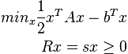

6. horton – The main Horton Package¶
6.1. horton.cache – Avoid recomputation of earlier results and reallocation of existing arrays¶
In principle, the JustOnceClass and the Cache can be used independently, but in some cases it makes a lot of sense to combine them. See for example the density partitioning code in horton.part.
- class horton.cache.JustOnceClass¶
Base class for classes with methods that should never be executed twice.
In typically applications, these methods get called many times, but only during the first call, an actual computation is carried out. This way, the caller can safely call a method, just to make sure that a required result is computed.
All methods in the subclasses that should have this feature, must be given the just_once decoratore, e.g.
class Example(JustOnceClass): @just_once def do_something(): self.foo = self.bar
When all results are outdated, one can call the clear method to forget which methods were called already.
- clear()¶
- horton.cache.just_once(fn)¶
- class horton.cache.Cache¶
Object that stores previously computed results.
The cache behaves like a dictionary with some extra features that can be used to avoid recomputation or reallocation.
- __getitem__(key)¶
- clear(**kwargs)¶
Clear all items in the cache
Optional arguments:
- dealloc
- When set to True, the items are really removed from memory.
- tags
- Limit the items cleared to those who have at least one tag that matches one of the given tags. When this argument is used and it contains at least one tag, items with no tags are not cleared.
- clear_item(*key, **kwargs)¶
Clear a selected item from the cache
Optional arguments:
- dealloc
- When set to True, the item is really removed from memory.
- dump(*args, **kwargs)¶
Store an object in the cache.
Arguments:
- key1 [, key2, ...]
- The positional arguments (except for the last) are used as a key for the object.
- value
- The object to be stored.
Optional argument:
- own
- When set to True, the cache will take care of denouncing the memory usage due to this array.
- tags
- Tags to be associated with the object
- iteritems(tags=None)¶
Iterate over all valid items in the cache.
- iterkeys(tags=None)¶
Iterate over the keys of all valid items in the cache.
- itervalues(tags=None)¶
Iterate over the values of all valid items in the cache.
- load(*key, **kwargs)¶
Get a value from the cache
Arguments:
- key0 [key1 ...]
- All positional arguments are used as keys to identify the cached value.
Optional arguments:
- alloc
- Parameters used to allocate a cached value if it is not present yet. This argument can take two forms. When integer or a tuple of integers is given, an array is allocated. Alternatively, a tuple may be given whose first element is a constructor, and further elements are arguments for that constructor.
- default
- A default value that is returned when the key does not exist in the cache. This default value is not stored in the cache.
- tags
- When alloc is used and a new object is thereby created or reused, it will get these tags. This argument is only allowed if the alloc argument is present. In case no new object is allocated, the given tags must match those already present.
The optional argument alloc and default are both meant to handle situations when the key has not associated value. Hence they can not be both present.
6.2. horton.cext – C++ extensions¶
- class horton.cext.Cell¶
Cell(ndarray rvecs=None) Representation of periodic boundary conditions.
0, 1, 2 and 3 dimensional systems are supported. The cell vectors need not to be orthogonal.- add_rvec(self, ndarray delta, ndarray r)¶
Add a linear combination of real cell vectors, r, to delta in-place
- dot_rvecs(self, ndarray cart)¶
Return the corresponding dot product with the rvecs
- static from_hdf5(type cls, grp, lf)¶
- static from_parameters(type cls, lengths, angles)¶
Construct a cell with the given parameters
The a vector is always parallel with the x-axis and they point in the same direction. The b vector is always in the xy plane and points towards the positive y-direction. The c vector points towards the positive z-direction.
The number of elements in the lengths and angles arrays determines the number of cell vectors. There are four cases:
- len(lengths) == 0 and len(angles) == 0: 0 rvecs
- len(lengths) == 1 and len(angles) == 0: 1 rvecs
- len(lengths) == 2 and len(angles) == 1: 2 rvecs
- len(lengths) == 3 and len(angles) == 3: 3 rvecs
- g_lincomb(self, ndarray coeffs)¶
Return a linear combination of reciprocal cell vectors
- get_glength(self, int i)¶
- get_gspacing(self, int i)¶
- get_ranges_rcut(self, ndarray delta, double rcut)¶
Return the integer ranges for linear combinations of cell vectors.
Arguments:
- delta
- The relative vector between two (interaction) centers
- rcut
- A cutoff radius
The returned ranges span the linear combination of cell vectors that can be added to delta to obtain all periodic images within the cutoff sphere centered at the origin.
- get_rlength(self, int i)¶
- get_rspacing(self, int i)¶
- glengths¶
The lengths of the reciprocal-space vectors.
- gspacings¶
The (orthogonal) spacing between opposite sides of the reciprocal-space unit cell.
- gvecs¶
The reciporcal-space cell vectors, layed out as rows.
- mic(self, ndarray delta)¶
Apply the minimum image convention to delta in-place
- nvec¶
The number of cell vectors
- parameters¶
The cell parameters (lengths and angles)
- rlengths¶
The lengths of the real-space vectors.
- rspacings¶
The (orthogonal) spacing between opposite sides of the real-space unit cell.
- rvecs¶
The real-space cell vectors, layed out as rows.
- select_inside(self, ndarray origin, ndarray center, double rcut, ndarray ranges_begin, ndarray ranges_end, ndarray shape, ndarray pbc, ndarray indexes)¶
- to_cart(self, ndarray frac)¶
Return the corresponding Cartesian coordinates
- to_frac(self, ndarray cart)¶
Return the corresponding fractional coordinates
- to_hdf5(self, grp)¶
- volume¶
The generalized volume of the unit cell (length, area or volume)
- horton.cext.smart_wrap(long i, long shape, long pbc)¶
- horton.cext.fill_cartesian_polynomials(ndarray output, long lmax)¶
Fill the output vector with cartesian polynomials
Arguments:
- output
- A double precision numpy array where the first three values are x, y and z coordinates.
- lmax
- The maximum angular momentum to compute.
The polynomials are stored according to the conventions set in get_cartesian_powers.
Returns:
The index of the first element of the array that contains the polynomials of the outermost shell.
- horton.cext.fill_pure_polynomials(ndarray output, long lmax)¶
Fill the output vector with pure polynomials
Arguments:
- output
- This can either be a double precission Numpy vector or 2D array. In the first case, the first three values are z, x, and y coordinates. In the second case, the first three columns contain z, x and y coordinates.
- lmax
- The maximum angular momentum to compute.
Returns:
The index of the first element of the array that contains the polynomials of the outermost shell.
- horton.cext.fill_radial_polynomials(ndarray output, long lmax)¶
Fill the output vector with radial polynomials
Arguments:
- output
- A double precision numpy array where the first element is the radius
- lmax
- The maximum angular momentum to compute.
All elements after the first will be filled up with increasing powers of the first element, up to lmax.
- horton.cext.compute_grid_nucpot(ndarray numbers, ndarray coordinates, ndarray points, ndarray output)¶
6.3. horton.checkpoint – Store (parts of) a system object in a checkpoint file¶
The philosophy of this module is to take away as much of the checkpointing machinery out of the rest of Horton. The only (somewhat unavoidable) exceptions to this philosophy are the load_checkpoint function in horton.io, the from_hdf5 and to_hdf5 methods in several parts of Horton and calls to System.update_chk in several parts of the code.
TODO: (long future) make the fields clever enough such that they can convert data from one linalgfactory into another.
- horton.checkpoint.load_hdf5_low(item, lf)¶
Load an object from an h5py object from a checkpoint file
Arguments:
- item
- A HD5 Dataset or group.
- horton.checkpoint.dump_hdf5_low(grp, name, att)¶
Low-level routine used to dump data to an HDF5 file.
- grp
- A HDF5 group.
- name
- The name to be used for this object.
- att
- The object to be written.
6.4. horton.constants – Physicochemical constants in atomic units¶
These are the physical constants defined in this module (in atomic units):
Name Value avogadro 6.0221415000e+23 boltzmann 3.1668154051e-06 lightspeed 1.3703599975e+02 planck 6.2831853072e+00
6.5. horton.context – The context in which Horton is used¶
This module controls global parameters that are purely technical, e.g. the location of data files. It is certainly not meant to keep track of input parameters for a computation.
This module contains a context object, an instance of the Context class. For now, its functionality is rather limited. It tries to figure out the location of the data directory. If it is not specified in the environment variable HORTONDATA, it is assumed that the data is located in a directory called data. If the data directory does not exist, an error is raised.
- class horton.context.Context¶
Finds out where the data directory is located etc.
The data directory contains data files with standard basis sets and pseudo potentials.
- get_fn(filename)¶
Return the full path to the given filename in the data directory.
- glob(pattern)¶
Return all files in the data directory that match the given pattern.
6.6. horton.exceptions – Definition of all excpetions in Horton¶
- exception horton.exceptions.ElectronCountError¶
Exception raised when a negative number of electron is encountered, or when more electrons than basis functions are requested.
- exception horton.exceptions.NoSCFConvergence¶
Exception raised when an SCF algorithm does not reach the convergence threshold in the specified number of iterations
- exception horton.exceptions.SymmetryError¶
Exception raised when some symmetry algorithm fails
6.7. horton.log – Screen logging, timing and citation management¶
The goal of the screen logger is to track the progress of a computation in a convenient human-readable way, possibly higlighting problematic situations. It is not intended as a computer-readable output file that contains all the results of a computation. For that purpose, all useful information is written to a binary checkpoint file or kept in memory as attributes of the Horton objects.
6.8. horton.matrix – Two- and four-dimensional matrix implementations¶
The purpose of this module is to provide a generic API for different implementations of real-valued double precision matrix storage and operations.
Two-dimensional matrices are supposed to be symmetric and are used to represent one-body operators and 1DRDMs. Four-dimensional matrices are used to represent two-body operators, which are invariant under the following interchanges of indexes:
<ij|kl> = <ji|lk> = <kl|ij> = <lk|ji> =
<il|kj> = <jk|li> = <kj|il> = <li|jk>
This module assumes physicists notation for the two-particle operators. It is up to the specific implementations of the matrices to make use of these symmetries.
One should use these matrix implementations without accessing the internals of each class, i.e. without accessing attributes or methods that start with an underscore.
In order to avoid temporaries when working with arrays, the methods do not return arrays. Instead such methods are an in place operation or have output arguments. This forces the user to allocate all memory in advance, which can then be moved out of the loops. The initial implementation (the Dense... classes) are just a proof of concept and may therefore contain internals that still make temporaries. This fixed later with an alternative implementation.
- class horton.matrix.LinalgFactory(default_nbasis=None)¶
A collection of compatible matrix and linear algebra routines.
This is just an abstract base class that serves as a template for specific implementations.
Optional arguments:
- default_nbasis
- The default basis size when constructing new operators/expansions.
- create_expansion(nbasis=None)¶
- create_one_body(nbasis=None)¶
- create_two_body(nbasis=None)¶
- diagonalize(ham, overlap, expansion, epsilons)¶
- error_eigen(ham, overlap, expansion, epsilons)¶
- get_memory_one_body(nbasis=None)¶
- get_memory_two_body(nbasis=None)¶
- set_default_nbasis(nbasis)¶
- class horton.matrix.LinalgObject¶
- apply_basis_permutation(permutation)¶
- apply_basis_signs(signs)¶
- assign(other)¶
- clear()¶
- copy()¶
- classmethod from_hdf5(grp, lf)¶
- to_hdf5(grp)¶
- class horton.matrix.OneBody(nbasis)¶
- dot(vec0, vec1)¶
- expectation_value(dm)¶
- get_element(i, j)¶
- iadd(other, factor=1)¶
- iscale(factor)¶
- itranspose()¶
- set_element(i, j, value)¶
- trace()¶
- class horton.matrix.DenseLinalgFactory(default_nbasis=None)¶
Optional arguments:
- default_nbasis
- The default basis size when constructing new operators/expansions.
- create_expansion(nbasis=None, nfn=None)¶
- create_one_body(nbasis=None)¶
- create_two_body(nbasis=None)¶
- static diagonalize(fock, overlap=None)¶
Generalized eigen solver for the given Hamiltonian and overlap.
Arguments:
- fock
- A DenseOneBody Hamiltonian (or Fock) operator.
- overlap
- A DenseOneBody overlap operator.
- static error_eigen(fock, overlap, expansion)¶
Compute the error of the orbitals with respect to the eigenproblem
Arguments:
- fock
- A DenseOneBody Hamiltonian (or Fock) operator.
- overlap
- A DenseOneBody overlap operator.
- expansion
- An expansion object containing the current orbitals/eginvectors.
- get_memory_one_body(nbasis=None)¶
- get_memory_two_body(nbasis=None)¶
- class horton.matrix.DenseExpansion(nbasis, nfn=None)¶
An expansion of several functions in a basis with a dense matrix of coefficients. The implementation is such that the columns of self._array contain the orbitals.
Arguments:
- nbasis
- The number of basis functions.
Optional arguments:
- nfn
- The number of functions to store. Defaults to nbasis.
- do_energies
- Also allocate an array to store an energy corresponding to each function.
- apply_basis_permutation(permutation)¶
Reorder the coefficients for a given permutation of basis functions.
- apply_basis_signs(signs)¶
Correct for different sign conventions of the basis functions.
- assign(other)¶
- check_normalization(olp, eps=0.0001)¶
Run an internal test to see if the orbitals are normalized
Arguments:
- olp
- The overlap one_body operators
Optional arguments:
- eps
- The allowed deviation from unity, very loose by default.
- clear()¶
- coeffs¶
The matrix with the expansion coefficients
- compute_density_matrix(dm, factor=None)¶
Compute the density matrix
Arguments:
- dm
- An output density matrix. This must be a DenseOneBody instance.
Optional arguments:
- factor
- When given, the density matrix is added with the given prefactor to the output argument. If not given, the original contents of dm are overwritten.
- copy()¶
- derive_from_density_and_fock_matrix(dm, fock, overlap, scale=-0.001)¶
Arguments:
- dm
- A DenseOneBody object with the density matrix
- fock
- A DenseOneBody object with the Fock matrix
- overlap
- A DenseOneBody object with the overlap matrix
Optional arguments:
- scale
- The linear coefficient for the density matrix. It is added to the Fock matrix as in level shifting to obtain a set of orbitals that diagonalizes both matrices.
This only works well for slater determinants without (fractional) holes below the Fermi level.
- derive_from_fock_matrix(fock, overlap)¶
Diagonalize a Fock matrix to obtain orbitals and energies
- derive_naturals(dm, overlap)¶
Arguments:
- dm
- A DenseOneBody object with the density matrix
- overlap
- A DenseOneBody object with the overlap matrix
Optional arguments:
- energies¶
The orbital energies
- get_homo_energy(offset=0)¶
Return a homo energy
Optional arguments:
- offset
- By default, the (highest) homo energy is returned. When this index is above zero, the corresponding lower homo energy is returned.
- get_homo_index(offset=0)¶
Return the index of a HOMO orbital.
- get_lumo_energy(offset=0)¶
Return a lumo energy
Optional arguments:
- offset
- By default, the (lowest) lumo energy is returned. When this index is above zero, the corresponding higher homo energy is returned.
- get_lumo_index(offset=0)¶
Return the index of a LUMO orbital.
- homo_energy¶
Return a homo energy
Optional arguments:
- offset
- By default, the (highest) homo energy is returned. When this index is above zero, the corresponding lower homo energy is returned.
- lumo_energy¶
Return a lumo energy
Optional arguments:
- offset
- By default, the (lowest) lumo energy is returned. When this index is above zero, the corresponding higher homo energy is returned.
- nbasis¶
The number of basis functions
- nfn¶
The number of orbitals (or functions in general)
- occupations¶
The orbital occupations
- read_from_hdf5(grp)¶
- to_hdf5(grp)¶
- class horton.matrix.DenseOneBody(nbasis)¶
Dense symmetric two-dimensional matrix, also used for density matrices.
This is the most inefficient implementation in terms of memory usage and computer time. Due to its simplicity, it is trivial to implement. This implementation mainly serves as a reference for testing purposes.
Arguments:
- nbasis
- The number of basis functions.
- apply_basis_permutation(permutation)¶
Reorder the coefficients for a given permutation of basis functions.
- apply_basis_signs(signs)¶
Correct for different sign conventions of the basis functions.
- assign(other)¶
- check_symmetry()¶
Check the symmetry of the array. For testing only.
- clear()¶
Resets array to zeros element-wise.
- copy()¶
- distance(other)¶
Maximum difference between self and other one body object
- dot(vec0, vec1)¶
- expectation_value(dm)¶
- classmethod from_hdf5(grp, lf)¶
- get_element(i, j)¶
- iadd(other, factor=1)¶
- idot(other)¶
Inplace dot operator
- iscale(factor)¶
- itranspose()¶
In-place transpose
- nbasis¶
The number of basis functions
- read_from_hdf5(grp)¶
- set_element(i, j, value)¶
- to_hdf5(grp)¶
- trace()¶
- class horton.matrix.DenseTwoBody(nbasis)¶
Dense symmetric four-dimensional matrix.
This is the most inefficient implementation in terms of memory usage and computer time. Due to its simplicity, it is trivial to implement. This implementation mainly serves as a reference for testing purposes.
Arguments:
- nbasis
- The number of basis functions.
- apply_basis_permutation(permutation)¶
Reorder the coefficients for a given permutation of basis functions.
- apply_basis_signs(signs)¶
Correct for different sign conventions of the basis functions.
- apply_direct(dm, output)¶
Compute the direct dot product with a density matrix.
- apply_exchange(dm, output)¶
Compute the exchange dot product with a density matrix.
- check_symmetry()¶
Check the symmetry of the array.
- clear()¶
- classmethod from_hdf5(grp, lf)¶
- get_element(i, j, k, l)¶
- nbasis¶
The number of basis functions
- set_element(i, j, k, l, value)¶
- to_hdf5(grp)¶
6.9. horton.moments – Auxiliary routines related to multipole moments¶
This module fixes all the conventions with respect to multipole moments. Some of the code below may (in some way) reoccur in the low-level routines. In any case, such low-level code should be consistent with the conventions in this module. See for example, horton.gobasis.cext.cart_to_pur_low.
- horton.moments.get_cartesian_powers(lmax)¶
Return an ordered list of power for x, y and z up to angular moment lmax
Arguments:
- lmax
- The maximum angular momentum (0=s, 1=p, 2=d, ...)
Returns: an array where each row corresponds to a multipole moment and each column corresponds to a power of x, y and z respectively. The rows are grouped per angular momentum, first s, them p, then d, and so on. Within one angular momentum the rows are sorted ‘alphabetically’, e.g. for l=2: xxx, xxy, xxz, xyy, xyz, xzz, yyy, yyz, yzz, zzz.
- horton.moments.get_ncart(l)¶
The number of cartesian powers for a given angular momentum, l
- horton.moments.get_ncart_cumul(lmax)¶
The number of cartesian powers up to a given angular momentum, lmax.
- horton.moments.rotate_cartesian_moments(moments, rmat)¶
Rotate cartesian moments
Arguments:
- moments
- A row vector with a series of cartesian multipole moments. Items in this vector should follow the same order as defined by the function get_cartesian_powers.
- rmat
- A (3,3) rotation matrix.
- horton.moments.get_npure(l)¶
The number of pure functions for a given angular momentum, l
- horton.moments.get_npure_cumul(lmax)¶
The number of pure functions up to a given angular momentum, lmax.
6.10. horton.periodic – Periodic table of elements¶
This module contains an object periodic that can be used as a Pythonic periodic table. It can be used as follows:
>>> from horton import periodic
>>> periodic['si'].number
14
>>> periodic['He'].number
2
>>> periodic['h'].symbol
'H'
>>> periodic[3].symbol
'Li'
>>> periodic['5'].symbol
'B'
- class horton.periodic.Element(number=None, symbol=None, **kwargs)¶
Represents an element from the periodic table.
The following attributes are supported for all elements:
- number
- The atomic number
- symbol
- A string with the symbol of the element.
The following attributes are present for some elements. When a parameter is not known for a given element, the attribute is set to None.
- cov_radius_cordero
- Covalent radius. B. Cordero, V. Gomez, A. E. Platero-Prats, M. Reves, J. Echeverria, E. Cremades, F. Barragan, and S. Alvarez, Dalton Trans. pp. 2832–2838 (2008), URL http://dx.doi.org/10.1039/b801115j
- cov_radius_bragg
- Covalent radius. W. L. Bragg, Phil. Mag. 40, 169 (1920), URL http://dx.doi.org/10.1080/14786440808636111
- cov_radius_slater
- Covalent radius. J. C. Slater, J. Chem. Phys. 41, 3199 (1964), URL http://dx.doi.org/10.1063/1.1725697
- vdw_radius_bondi
- van der Waals radius. A. Bondi, J. Phys. Chem. 68, 441 (1964), URL http://dx.doi.org/10.1021/j100785a001
- vdw_radius_truhlar
- van der Waals radius. M. Mantina A. C. Chamberlin R. Valero C. J. Cramer D. G. Truhlar J. Phys. Chem. A 113 5806 (2009), URL http://dx.doi.org/10.1021/jp8111556
- vdw_radius_rt
- van der Waals radius. R. S. Rowland and R. Taylor, J. Phys. Chem. 100, 7384 (1996), URL http://dx.doi.org/10.1021/jp953141+
- vdw_radius_batsanov
- van der Waals radius. S. S. Batsanov Inorganic Materials 37 871 (2001), URL http://dx.doi.org/10.1023/a%3a1011625728803
- vdw_radius_dreiding
- van der Waals radius. Stephen L. Mayo, Barry D. Olafson, and William A. Goddard III J. Phys. Chem. 94 8897 (1990), URL http://dx.doi.org/10.1021/j100389a010
- vdw_radius_uff
- van der Waals radius. A. K. Rappi, C. J. Casewit, K. S. Colwell, W. A. Goddard III, and W. M. Skid J. Am. Chem. Soc. 114 10024 (1992), URL http://dx.doi.org/10.1021/ja00051a040
- vdw_radius_mm3
- van der Waals radius. N. L. Allinger, X. Zhou, and J. Bergsma, Journal of Molecular Structure: THEOCHEM 312, 69 (1994), http://dx.doi.org/10.1016/s0166-1280(09)80008-0
- wc_radius
- Waber-Cromer radius of the outermost orbital maximum. J. T. Waber and D. T. Cromer, J. Chem. Phys. 42, 4116 (1965), URL http://dx.doi.org/10.1063/1.1695904
- cr_radius
- Clementi-Raimondi radius. E. Clementi, D. L. Raimondi, W. P. Reinhardt, J. Chem. Phys. 47, 1300 (1967), URL http://dx.doi.org/10.1063/1.1712084
The following attribute is derived from the data given above:
- cov_radius:
- equals cov_radius_cordero
- vdw_radius:
- vdw_radius_truhlar if present else vdw_radius_bondi if present else vdw_radius_batsanov if present else vdw_radius_mm3 if present else None
- becke_radius:
- cov_radius_slater if present else cov_radius_cordero if present else None
- attribute_names = ['cov_radius_cordero', 'cov_radius_bragg', 'cov_radius_slater', 'vdw_radius_bondi', 'vdw_radius_truhlar', 'vdw_radius_rt', 'vdw_radius_batsanov', 'vdw_radius_dreiding', 'vdw_radius_uff', 'vdw_radius_mm3', 'wc_radius', 'cr_radius']¶
6.11. horton.quadprog – A light-weight quadratic programming solver¶
Problems of the following type can be solved:

This is not the most general type of quadratic programming but it is sufficient for the needs in Horton.
The equality constraints are optional. When A is positive definite, a polynomial-scaling interior point algorithm can be used: QPSolver.find_local. If A has negative eigenvalues, only the brute force solver is reliable but it’s cost scales exponentially with problem size.
No a priori feasibility tests are carried out and it is assumed that in QPSolver.find_local one is able to provide a feasible initial guess. The routine QPSolver.find_brute will complain a posteriori if the problem is infeasible.
When A is negative definite, the solution may be unbounded. In the QPSolver.find_local algorithm, this will lead to a convergence failure in a limited number of steps. In QPSolver.find_brute`, this situation is properly detected.
In summary, it is assumed that one only works with well-behaved problems. Issues with feasibilty and boundedness are not always handled smoothly.
6.11.1. Notation¶
The following naming conventions are used:
- free
- Refers to the components of the solution that is not constrained to zero. The variable free is always an array with booleans indicating which components are free (True) or frozen (False).
- frozen
- Opposite of free.
- x
- A solution vector
- nx
- The dimension of the solution vector
- nl
- The number of constraints
- class horton.quadprog.QPSolver(a, b, r=None, s=None, eps=1e-10)¶
A Quadratic Programming Solver
The problem is defined as follows;
Arguments:
- a
- The symmetric matrix
- b
- The column vector .
Optional arguments:
- r
- The matrix with constraint coefficients, .
- s
- The matrix with constraint targets, .
- eps
- A general threshold used for several purposes, e.g. the validity of a solution.
- check_feasible(x, free=None)¶
Check if a solution, x, matches the constraints
Arguments:
- x
- The solution to test
Optional arguments:
- free
- When given, it is assumed that the fixed variables must be zero and that the rest can be anything (also negative). When not given, all components of x must be zero or positive.
- check_solution(x)¶
Check if a solution, x, is a valid local minimum
- compute_cn(free)¶
Compute the condition number of the problem.
Arguments:
- free
- Boolean array with the free components.
- compute_cost(x)¶
Compute the function to be minimized for the given x
- find_brute()¶
Brute force solution of the quadratic programming problem
Returns:
- cost
- The value of the cost function at the solution
- x
- The solution vector
- find_local(x, trust_radius, maxiter=None)¶
A local solver for the quadratic programming problem
Arguments:
- x
- The initial guess for the solution. This must be a feasible point.
- trust_radius
- The maximum step size. This can be fairly large.
Optional arguments:
- maxiter
- The maximum number of iterations, this is 10*nx by default.
Returns:
- cost
- The value of the cost function at the solution
- x
- The solution vector
Note that this local search will always lead to the global optimum if the matrix
 is positive definite.
is positive definite.
- get_free_problem(free)¶
Return the matrix a, b, r and s without the frozen columns/rows
Arguments:
- free
- Boolean array with the free components
Returns:
- a2
- The coefficients of the free system, including rows and colums for the lagrange multipliers.
- b2
- The right-hand side of the equations, including the targets of the equations.
- nfree
- The number of equations due to free components of x.
- get_rmsds(x)¶
Quantify how far x deviates from a local solution
Returns:
- gradient
- The gradient projected onto the equality constraints, if any.
- rmsd_free
- The gradient RMSD for the non-zero components
- rmsd_frozen
- The gradient RMSD for the zero components. Only contributions from negative components are included.
- rmsd_neg
- The rmsd of the negative components of the solution.
- log(x=None)¶
Print out the qps for debugging purposes
Optional arguments:
- x
- An solution vector (that causes problems).
- nl¶
The number of constraints
- nx¶
The number of unkowns
- solve(free)¶
Solve the problem, keeping certain components fixed at zero
The equality constraints are honored. However, free components may become negative. Fixed components are internally excluded from the equations and their result is manually set to zero.
Arguments:
- free
- Boolean array with the free components
- solve_radius(free, center, radius)¶
Solve the equations, keeping certain components fixed at zero, with maximum radius.
The equality constraints are honored. However, free components may become negative. Fixed components are internally excluded from the equations and their result is manually set to zero.
Arguments:
- free
- Boolean array with the free components
- center
- The center of the restraint, a vector with length nx. ()
- radius
- The maximum Euclidean distance of the returned solution x from the given center
6.12. horton.symmetry – Geometric symmetries¶
The symmetry tools in Horton are just meant to provide optional additional information on top of a System instance.
- class horton.symmetry.Symmetry(name, generators, fracs, numbers, cell, labels=None)¶
An optional symmetry descriptor for Horton System objects
Arguments:
- name
- Whatever name you want to give to this symmetry. This is converted to a string.
- generators
- A list of (3,4) matrices where the first three columns contain the linear transformation matrix and the last column is a translation vector. These transformations act on the fractional (or reduced) coordinates.
- fracs
- The fractional coordinates of a primitive cell/unit.
- numbers
- The corresponding element numbers of the primitive cell/unit
- cell
- A Cell object. Even for isolated systems a cell object must be provided with nvec=0.
Optional arguments:
- labels
- A list of unique labels for each atom in the primitive unit. These are generated from the numbers array when not given.
- cell¶
- fracs¶
- classmethod from_hdf5(grp, lf)¶
Construct a Symmetry object from a HDF5 group
- generate(threshold=0.001)¶
Returns a system object
Optional arguments:
- threshold
- When, after transformation with the generators, two (or more) symmetry atoms overlap within this threshold, they will be merged into one. The distance is measured in Cartesian coordinates.
Returns:
- coordinates
- Cartesian coordinates for all atoms.
- numbers
- Element numbers for all atoms.
- links
- An array of indexes to connect each atom back with an atom in the primitive cell (first column) and a generator (second column).
- generators¶
- identify(system, threshold=0.1)¶
Connect atoms in the primitive unit with atoms in the system object
Arguments:
- system
- A system object where to atoms (with some minor deviation) adhere to this symmetry.
Optional arguments:
- threshold
- The maximum allowed distance between the ideal atom position and the actual atom position
Returns:
- links
- An array of indexes to connect each atom back with an atom in the primitive cell (first column) and a generator (second column).
If an atom in the System object can not be linked with an atom in the primitive unit, a SymmetryError is raised. If the system contains less atoms (e.g. a vacancy) than the perfect crystal, this method will not complain.
- labels¶
- name¶
- natom¶
The number of atoms in the primitive unit
- numbers¶
- to_hdf5(grp)¶
Write a symmetry object to an HDF5 group
6.13. horton.system – Molecular system and all aspects relevant for a computation¶
Objects of the System class specify the geometry (and atomic elements) of the molecule on which Horton will perform a computation. Also other parameters that determine several aspects of the molecular wavefunction, are attributes of a System instance, e.g. basis sets, pseudo-potentials, ghost atoms, etc.
- class horton.system.System(coordinates, numbers, obasis=None, grid=None, wfn=None, lf=None, cache=None, extra=None, cell=None, pseudo_numbers=None, chk=None)¶
Arguments:
- coordinates
- A (N, 3) float numpy array with Cartesian coordinates of the atoms.
- numbers
- A (N,) int numpy vector with the atomic numbers.
Optional arguments:
- obasis
- A string or an instance of either the basis set or basis set description classes, e.g. ‘STO-3G’, GOBasisDesc(‘STO-3G’), ... for the orbitals.
- grid
- A grid object used for molecular integration.
- wfn
- A wavefunction object.
- lf
- A LinalgFactory instance. When not given, a DenseLinalgFactory is used by default.
- cache
A cache object with computed results that depend on other attributes of the system class. Cached items should be tagged according to the attributes they depend on:
- o: obasis
- c: coordinates
- g: grid
When given as a dictionary, each value must consist of two items: the object to be cached and the tags.
- extra
- A dictionary with additional information about the system. The keys must be strings.
- cell
- A Cell object that describes the (generally triclinic) periodic boundary conditions. So far, this is nearly nowhere supported in Horton, so don’t get too excited.
- pseudo_numbers
- The core charges of the pseudo potential, if applicable
- chk
- A filename for the checkpoint file or an open h5.File object. If the file does not exist yet, it will be created. If the file already exists, it must be an HDF5 file that is structured such that it adheres to the format that Horton creates itself. If chk is an open h5.File object, it will not be closed when the System instance is deleted.
- assign_chk(chk)¶
- cache¶
A cache of intermediate results that depend on the coordinates
- cell¶
A Cell object describing the periodic boundary conditions.
- charge¶
- chk¶
A h5.File instance used as checkpoint file or None
- compute_grid_density(*args, **kwargs)¶
- compute_grid_density_fock(*args, **kwargs)¶
- compute_grid_esp(*args, **kwargs)¶
- compute_grid_gradient(*args, **kwargs)¶
- compute_grid_gradient_fock(*args, **kwargs)¶
- compute_grid_hartree(*args, **kwargs)¶
- compute_grid_orbitals(*args, **kwargs)¶
- compute_nucnuc()¶
Compute interaction energy of the nuclei
- coordinates¶
The positions of the nuclei
- extra¶
A dictionary with extra properties of the system.
- classmethod from_file(*args, **kwargs)¶
Create a System object from a file.
A list of filenames may be provided, which will be loaded in that order. Each file complements or overrides the information loaded from a previous file in the list. Furthermore, keyword arguments may be used to specify additional constructor arguments.
The lf optional argument is picked up from the kwargs list to contstruct (when needed) arrays to store the results loaded from file. When lf is not given, a DenseLinalgFactory is created by default.
The filenames may also contain checkpoint files and open h5.File objects of checkpoint files. The last such checkpoint file will automatically be used as a checkpoint file for this class. If you want to override this behavior, provide the chk keyword argument (may be None).
- get_electron_repulsion(*args, **kwargs)¶
- get_kinetic(*args, **kwargs)¶
- get_nuclear_attraction(*args, **kwargs)¶
- get_overlap(*args, **kwargs)¶
- grid¶
The integration grid
- lf¶
The LinalgFactory for this system
- natom¶
The number of atoms
- numbers¶
An array with the atomic numbers
- obasis¶
The orbital basis
- obasis_desc¶
The orbital basis description
- pseudo_numbers¶
- to_file(filename)¶
Write the system to a file
Arguments:
- filename
- The name of the file to write to. The extension of the file is used to determine the file format.
- update_chk(field_name=None)¶
Write (a part of) the system to the checkpoint file.
Optional Argument:
- field
- A field string that specifies which part must be written to the checkpoint file. When not given, all possible fields are written. The latter is only useful in specific cases, e.g. upon initialization of the system. The available field names are specified in the attribute register dictionary in the module horton.checkpoint.
- update_coordinates(coordinates=None)¶
Update all attributes that depend on coodinates and clear related parts of cache
Optional arguments:
- coordinates
- The new atomic coordinates
When one wants to set new coordintes, one may also edit the system.coordinates array in-place and then call this method without any arguments.
- update_grid(grid=None)¶
Define a new integration grid and clear related parts of the cache
Optional arguments:
- grid
- The new integration grid. When not given, it is assumed that the grid was modified in-place and that only derived results in the cache need to be pruned.
- update_obasis(obasis=None)¶
Regenerate the orbital basis and clear all attributes that depend on it.
Optional arguments:
- obasis
- The new basis. This may be a string or an instance of GOBasis or GOBasisDesc. When not given, the orbital basis description stored in the system object (_obasis_desc attribute) will be used.
- wfn¶
The wavefunction
6.14. horton.units – Conversion from and to atomic units¶
Internally Horton always uses atomic units. Atomic units are consistent, similar to the SI unit system: one does not need conversion factors in the middle of a computation. This choice facilitates the programming and reduces accidental bugs.
References for the conversion values:
- B. J. Mohr and B. N. Taylor, CODATA recommended values of the fundamental physical constants: 1998, Rev. Mod. Phys. 72(2), 351 (2000)
- The NIST Reference on Constants, Units, and Uncertainty (http://physics.nist.gov/cuu/Constants/index.html)
- 1 calorie = 4.184 Joules
Conventions followed by this module:
Let foo be is the value of an external unit in internal (atomic) units. The way to use this unit is as follows: 5*foo litterally means five times foo. The result of this operation is a floating point number for this value in atomic units.
Examples:
If you want to have a distance of five angstrom in internal units: 5*angstrom.
If you want to convert a length of 5 internal units to angstrom: 5/angstrom.
Remarks:
It is highly recommended to perform unit conversions only when data is read from the input or data is written to the output. It may also be useful in input scripts that use Horton. Do not perform any unit conversion in other parts of the program.
An often recurring question is how to convert a frequency in internal units to a spectroscopic wavenumber in inverse centimeters. This is how it can be done:
>>> from horton import centimeter, lightspeed
>>> invcm = lightspeed/centimeter
>>> freq = 0.00320232
>>> print freq/invcm
These are the conversion constants defined in this module:
Name Value ampere 1.5097490095e+02 amu 1.8228886274e+03 angstrom 1.8897261339e+00 atm 3.4439674262e-09 au 1.0000000000e+00 avogadro 6.0221415000e+23 bar 3.3989315828e-09 calorie 9.5968941808e+17 centimeter 1.8897261339e+08 coulomb 6.2415097445e+18 debye 3.9343031369e-01 decimeter 1.8897261339e+09 deg 1.7453292520e-02 electronvolt 3.6749325920e-02 femtosecond 4.1341373337e+01 gram 1.0977693253e+27 hertz 2.4188843265e-17 joule 2.2937127583e+17 kcalmol 1.5936015753e-03 kelvin 1.0000000000e+00 kilogram 1.0977693253e+30 kjmol 3.8087991760e-04 liter 6.7483345942e+27 meter 1.8897261339e+10 micrometer 1.8897261339e+04 miligram 1.0977693253e+24 milimeter 1.8897261339e+07 mol 6.0221415000e+23 nanometer 1.8897261339e+01 nanosecond 4.1341373337e+07 newton 1.2137805141e+07 pascal 3.3989315828e-14 picometer 1.8897261339e-02 picosecond 4.1341373337e+04 rad 1.0000000000e+00 rydberg 5.0000000000e-01 second 4.1341373337e+16 unified 1.8228886274e+03
6.15. horton/cell.h¶
Functionslong smart_wrap(long i, long shape, long pbc)
class Cell
Public FunctionsPrivate MembersCell(double * _rvecs, int _nvec)void mic(double * delta)void to_frac(double * cart, double * frac)void to_cart(double * frac, double * cart)void g_lincomb(double * coeffs, double * gvec)void dot_rvecs(double * cart, double * dot_rvecs)void add_rvec(double * delta, long * r)int get_nvec()double get_volume()double get_rspacing(int i)double get_gspacing(int i)double get_rlength(int i)double get_glength(int i)void copy_rvecs(double * _rvecs)void copy_gvecs(double * _gvecs)void copy_rlengths(double * _rlengths)void copy_glengths(double * _glengths)void copy_rspacings(double * _rspacings)void copy_gspacings(double * _gspacings)void set_ranges_rcut(double * delta, double rcut, long * ranges_begin, long * ranges_end)long select_inside(double * origin, double * center, double rcut, long * ranges_begin, long * ranges_end, long * shape, long * pbc, long * indexes)double rvecs[9]
double gvecs[9]
double rlengths[3]
double glengths[3]
double rspacings[3]
double gspacings[3]
double volume
int nvec
6.16. horton/moments.h¶
Functionslong fill_cartesian_polynomials(double * output, long lmax)long fill_pure_polynomials(double * output, long lmax)long fill_pure_polynomials_array(double * output, long lmax, long nrep, long stride)void fill_radial_polynomials(double * output, long lmax)
6.17. horton/nucpot.h¶
Functionsvoid compute_grid_nucpot(long * numbers, double * coordinates, long natom, double * points, double * output, long npoint)Compute the electrostatic potential due to the nuclei on a grid.
- Parameters
- numbers -
The pointer to an array with atomic numbers. This array contains natom elements.
- coordinates -
The pointer to an array with atomic coordinates. This array contains 3*natom elements of an (atom,3) array in row-major ordering.
- natom -
The number of atoms.
- points -
The pointer to the array with coordinates of the grid points. This array contains 3*npoint elements of an (npoint,3) array in row-major ordering.
- output -
The pointer to the output array. This array constins npoint elements.
- npoint -
The number of grid points.